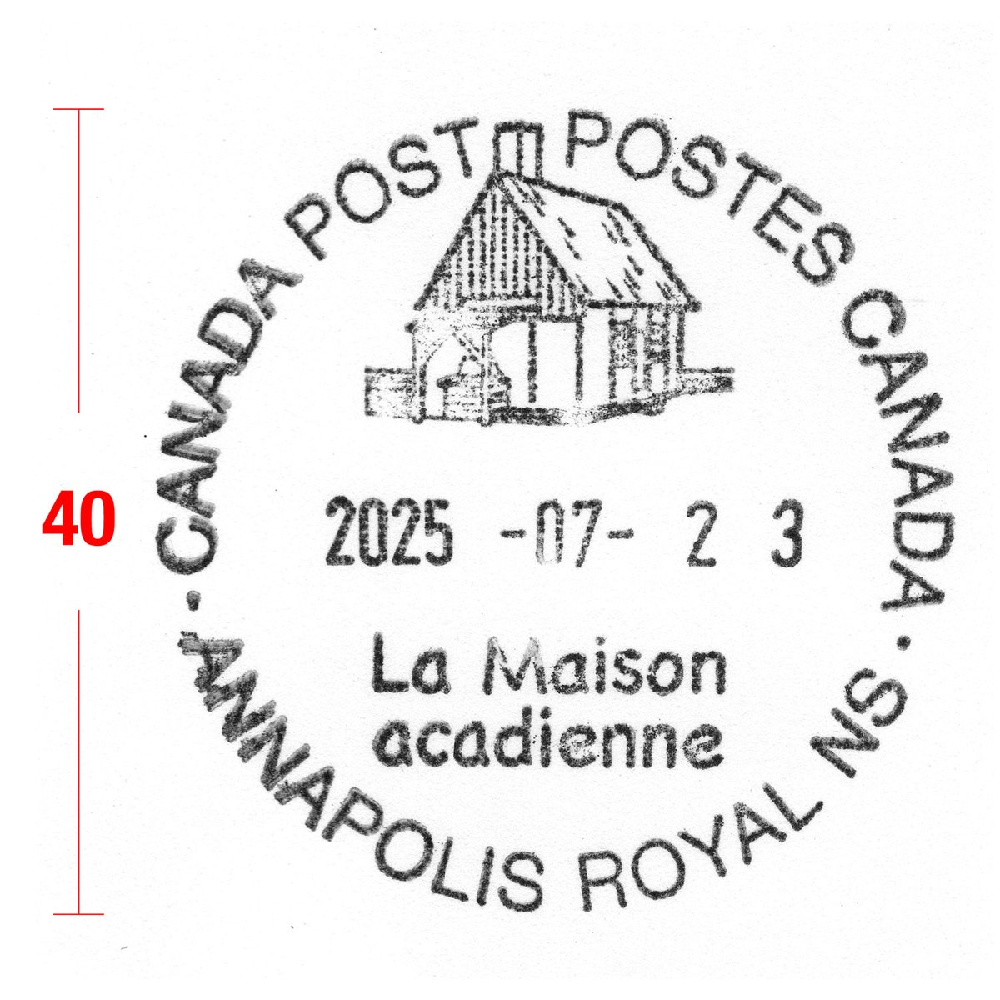

Annapolis Royal PO pictorial cancel
La Maison acadienne
- Status
- Active
- Run dates
- ? to present
- Design
- "La Maison acadienne"; Acadian house
- Ink colour
- Black
- Designer
- Unknown
- Post office
- Annapolis Royal PO
54 Victoria St
Annapolis Royal, NS
B0S 1A0 - Subjects
- architecture, building, house, Acadia
Collect it by mail. Send your stamped covers, with a stamped return envelope, to the post office address above. How to collect pictorial cancels by mail · en français
 Digby Main POScallop
Digby Main POScallop Middleton PO2011
Middleton PO2011